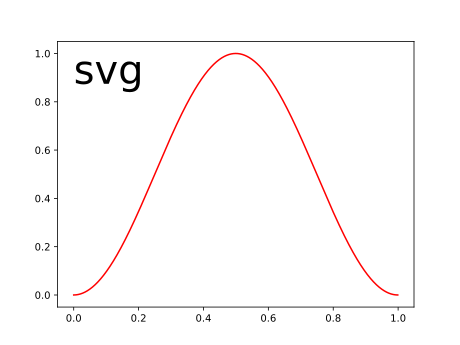

Note
Click here to download the full example code or to run this example in your browser via Binder
“SVG”:-graphics_¶
Make sure we can embed SVG graphics. Use title that has punctuation marks.
Out:
Text(0, 1, 'svg')
Total running time of the script: ( 0 minutes 0.070 seconds)